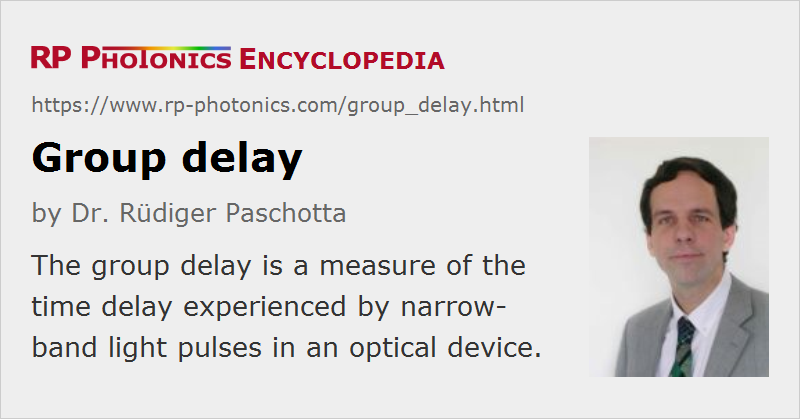

Group Delay
Definition: a measure of the time delay experienced by narrow-band light pulses in an optical device
German: Gruppenverzögerung
Categories: general optics, light pulses
Formula symbol: Tg
Units: s
How to cite the article; suggest additional literature
Author: Dr. Rüdiger Paschotta
The group delay (Tg) of an optical element (e.g. a dielectric mirror or a piece of optical fiber) is defined as the derivative of the change in spectral phase with respect to the angular frequency:
It has the units of a time and generally (in dispersive media) depends on the optical frequency (→ group delay dispersion, chromatic dispersion) and possibly on the polarization state (→ polarization mode dispersion) and optical mode (→ intermodal dispersion).
As a simple example, for propagation over a distance d in vacuum we have φ = 2π d / λ = ω d / c, so that the resulting group delay is d / c.
For linear propagation of a narrow-band optical pulse with a simple temporal and spectral shape, the group delay is the time delay which the pulse maximum experiences when propagating through the optical element. (It is the absolute time delay, not a time relative to propagation in free space.) For broadband optical pulses, and particularly in situations where nonlinearities affect the propagation, the situation can be more sophisticated. Inappropriate interpretations of the group delay can then cause substantial confusion.
For common transparent solid-state media such as laser crystals or optical fibers, the group delay can significantly deviate from the length divided by the phase velocity. For example, one meter of fused silica bulk material causes a group delay of 4.879 ns at 1550 nm, whereas from the phase velocity one would calculate 4.817 ns. For a shorter wavelength like 400 nm, this discrepancy is larger: the group delay is 5.049 ns instead of 4.878 ns. In optical fibers, the group delay is further modified by dopants of the fiber core and by the effect of waveguide dispersion.
For an optical resonator, the group delay (and not the phase delay) for one round trip determines the resonator mode spacing, also called the free spectral range.
The group delay of an optical element can be measured in various ways. A conceptually most direct method is based on measuring the arrival times of ultrashort pulses. However, there are more powerful interferometric methods, e.g. based on white light interferometry, which allow the measurement of wavelength-resolved group delay with a precision of a few femtoseconds.
The group velocity of light in a medium is the inverse of the group delay per unit length.
Questions and Comments from Users
Here you can submit questions and comments. As far as they get accepted by the author, they will appear above this paragraph together with the author’s answer. The author will decide on acceptance based on certain criteria. Essentially, the issue must be of sufficiently broad interest.
Please do not enter personal data here; we would otherwise delete it soon. (See also our privacy declaration.) If you wish to receive personal feedback or consultancy from the author, please contact him e.g. via e-mail.
By submitting the information, you give your consent to the potential publication of your inputs on our website according to our rules. (If you later retract your consent, we will delete those inputs.) As your inputs are first reviewed by the author, they may be published with some delay.
Bibliography
| [1] | K. Naganuma et al., “Group-delay measurement using the Fourier transform of an interferometric cross correlation generated by white light”, Opt. Lett. 15 (7), 393 (1990), doi:10.1364/OL.15.000393 |
| [2] | M. Beck and I. A. Walmsley, “Measurement of group delay with high temporal and spectral resolution”, Opt. Lett. 15 (9), 492 (1990), doi:10.1364/OL.15.000492 |
| [3] | M. Beck, I. A. Walmsley, and J. D. Kafka, “Group delay measurements of optical components near 800 nm”, IEEE J. Quantum Electron. 27 (8), 2074 (1991), doi:10.1109/3.83423 |
| [4] | A. P. Kovacs et al., “Group-delay measurement on laser mirrors by spectrally resolved white-light interferometry”, Opt. Lett. 20 (7), 788 (1995), doi:10.1364/OL.20.000788 |
| [5] | S. Diddams and J.-C. Diels, “Dispersion measurements with white-light interferometry”, J. Opt. Soc. Am. B 13 (6), 1120 (1996), doi:10.1364/JOSAB.13.001120 |
| [6] | A. Gosteva et al., “Noise-related resolution limit of dispersion measurements with white-light interferometers”, J. Opt. Soc. Am. B 22 (9), 1868 (2005), doi:10.1364/JOSAB.22.001868 |
| [7] | T. V. Amotchkina et al., “Measurement of group delay of dispersive mirrors with white-light interferometer”, Appl. Opt. 48 (5), 949 (2009), doi:10.1364/AO.48.000949 |
See also: spectral phase, group delay dispersion, group velocity, polarization mode dispersion, superluminal transmission
and other articles in the categories general optics, light pulses
|  |
If you like this page, please share the link with your friends and colleagues, e.g. via social media: 


These sharing buttons are implemented in a privacy-friendly way! |
2020-03-23
What is the difference between group delay and group velocity?
Answer from the author:
The group delay in an optical device is the time delay for a pulse to pass it. The group velocity is the velocity of such a pulse: travel distance per unit time.